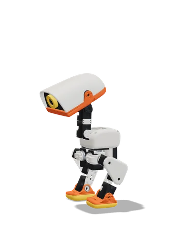
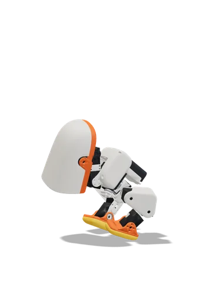
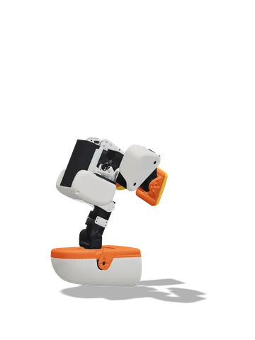
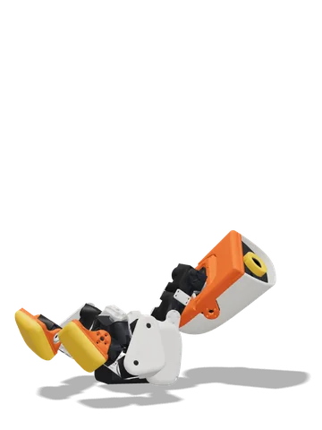
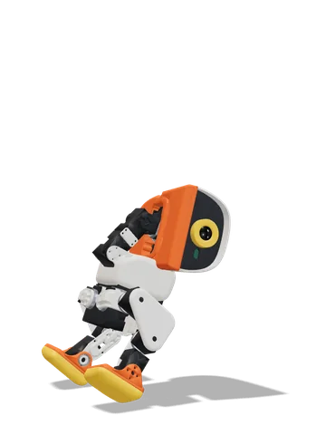
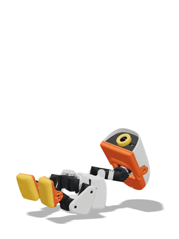
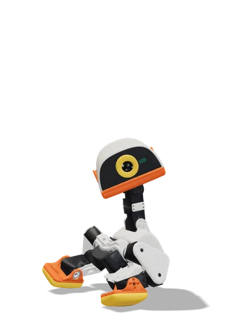
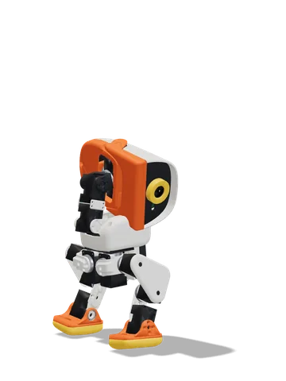

群友训练好的动作都放在这里。看一眼预览，装到自己的鸭子上，按一个键它就做。
每一格都是模型在仿真里真做出来的一瞬间，不是画的。动作交上来，先在仿真里跑一遍，预览就是这么来的。

0.0 s
0.3 s
0.6 s
0.9 s
1.2 s
1.5 s
1.8 s
2.1 s想好了怎么训但还没训的、训了还没上真机的，先挂在这里。练成一个，就搬到上面去。
动作不塞进镜像。镜像里只带出厂那几个，别的想要再装。一个动作就是一个小文件夹，格式和官方放在 Hugging Face 上的一样。
在 Studio 里点「装」，鸭子自己去下。
手机先把包下好，连上鸭子再传进去。
训练完导出 ONNX。用我们仓库里的训练流程，站姿和关节顺序自然就对得上。
名字、时长、怎么触发、在哪台机器上试过。有实拍就一起交。
我们在仿真里跑一遍、生成预览，标上「仿真通过」或「实机验证」，再上架。